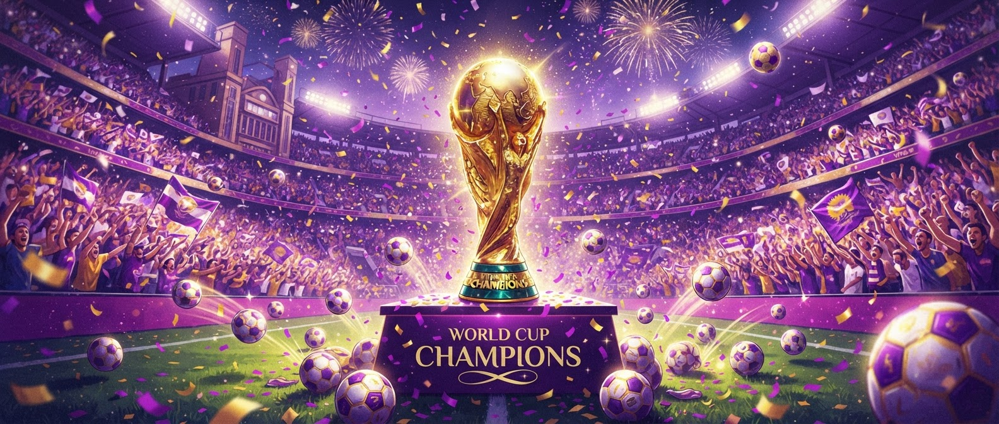
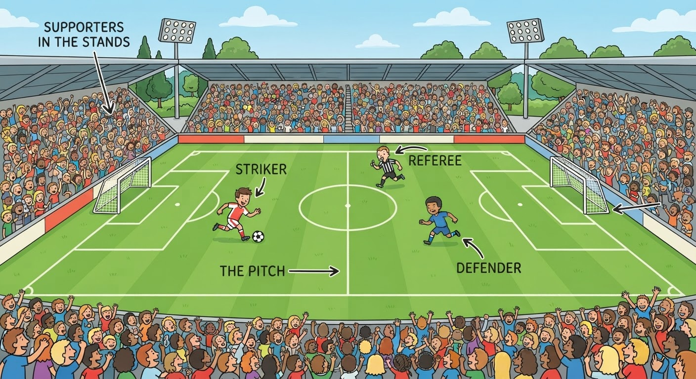
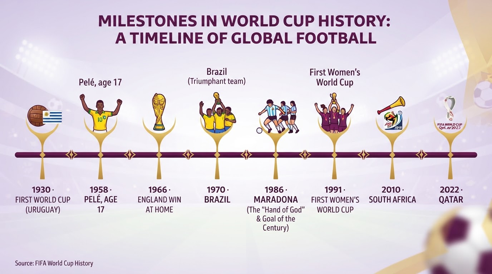
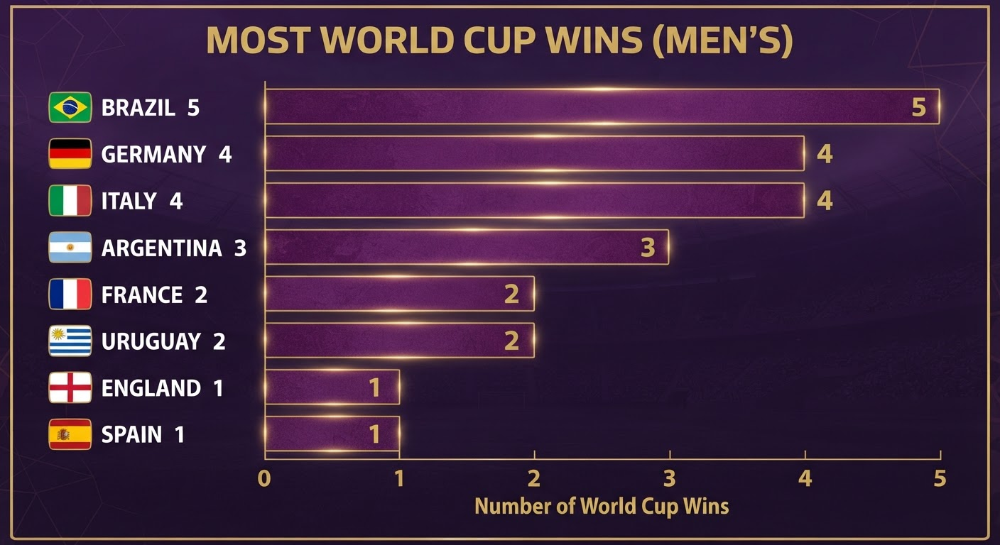
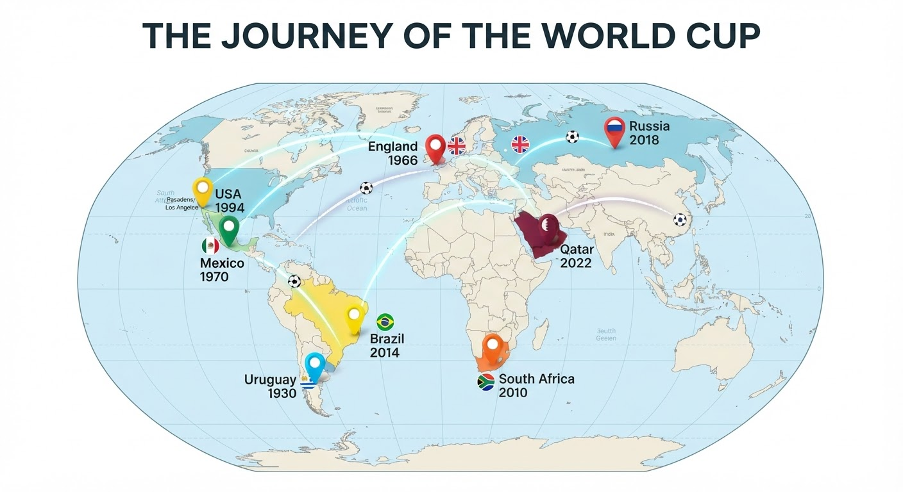
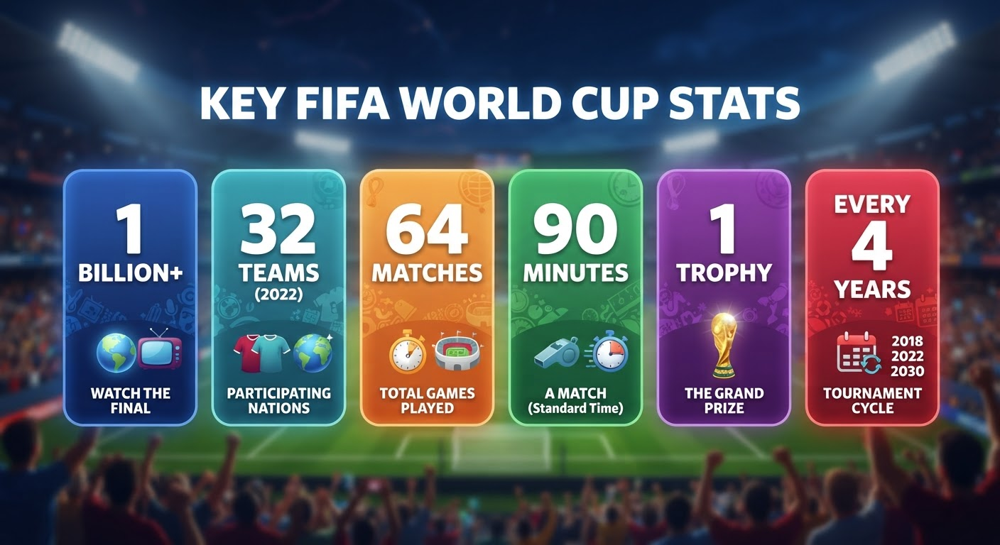

The story of football's greatest show — from a small tournament in 1930 to the biggest party on Earth.
Want more detail? Read this lesson at B2/C1 level →

Each new word is hidden in a sentence. Read it aloud and say what you think the bold word means — then reveal it and check.

Read each part. After it, there's a quick check (try to answer from memory first), then one thing to discuss.

Football is the most popular sport in the world. People have played games with a ball for hundreds of years, but modern football started in Britain in the 1800s. In 1904, a group of countries created FIFA, the organisation that still runs world football today.
FIFA wanted one big competition for every country. So in 1930, the first World Cup took place in Uruguay, in South America. Only thirteen teams came, because the journey by boat was long and expensive. Uruguay, the host country, won the first tournament, and the winners received a small gold trophy.
1. Where and when did modern football start, and what is FIFA?
2. Where was the first World Cup, and who won it?
1. Modern football started in Britain in the 1800s. FIFA is the organisation, created in 1904, that runs world football.
2. The first World Cup was in Uruguay in 1930, and the host country, Uruguay, won it.
After the Second World War, the World Cup grew quickly. More countries joined, and television brought the matches into millions of homes for the first time.
New stars became famous all over the world. In 1958, a seventeen-year-old Brazilian called Pelé scored in the final and became a legend. Brazil won the World Cup many times and played beautiful, exciting football. In 1966, England won the tournament at home — for the first and only time. In 1986, the Argentinian player Diego Maradona scored two of the most famous goals in history in a single match. Every four years, the whole world stopped to watch.
1. What two things helped the World Cup grow after the war?
2. Who was Pelé, and what happened in 1966?
1. More countries joined, and television brought the matches into millions of homes.
2. Pelé was a Brazilian who scored in the 1958 final aged seventeen and became a legend. In 1966, England won the World Cup at home for the only time.
Today the World Cup is the biggest sporting event on Earth. More than a billion people watch the final on television — more than any other programme in the world.
The tournament now travels the globe. In 2010, South Africa became the first African country to host it. In 2022, the small country of Qatar hosted it for the first time in the Middle East. There is also a Women's World Cup, which started in 1991 and is now hugely popular, with big crowds and star players of its own. From thirteen teams in 1930 to a global celebration watched by half the planet, football really is the world's game.
1. How do we know the World Cup final is the biggest event on Earth?
2. Give two ways the tournament has changed since 1930.
1. More than a billion people watch the final — more than any other television programme in the world.
2. Any two: far more teams; it now travels to new places (South Africa 2010, Qatar 2022); there is a hugely popular Women's World Cup (from 1991); billions now watch on TV.
Sport is all about comparing: who is faster, whose team is better, who is the greatest of all time. English has two tools for this.
1. fast → →
2. popular → →
3. good → →
4. big → →
1. faster → the fastest · 2. more popular → the most popular · 3. better → the best · 4. bigger → the biggest
Use the adjective in brackets in the correct form.
1. Brazil has won the World Cup five times — they are the team in history. (successful)
2. Many people think Pelé was than any other player of his time. (good)
3. The 1930 tournament was much than today's. (small)
4. The final is the match of the whole tournament. (exciting)
1. most successful · 2. better · 3. smaller · 4. most exciting
Put each adjective in the correct form. Read it aloud when you finish.
Football is the (popular) sport on Earth. A World Cup final is (big) than any other single match, and for many fans it is the (good) day of the year. Modern players are (fit) than players in 1930, and the tournament is (large) than ever before.
most popular · bigger · best · fitter · larger
Keep these forms ready — you'll need them in the Speak tab to argue who is the greatest.
Look at each picture, read the numbers, and answer the questions out loud. This is where the story becomes real.



This is the most important part of the lesson — do all of it out loud. The timer keeps you talking.
Tell the story of the World Cup in your own words, as if to a friend who knows nothing about it: the first tournament in 1930 → television and the great players → the huge global event of today.
Use at least two comparatives, two superlatives, and five key words.
Who is the greatest football player ever — Pelé, Maradona, Messi, Ronaldo, or someone else? Choose one and argue for them using superlatives: "the fastest", "the most exciting", "the best". Then let your teacher argue for a different player and defend your choice.
Talk about football and you — choose one: